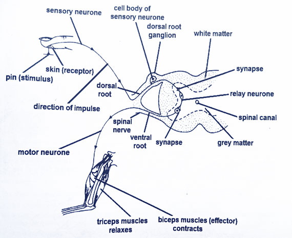

Voluntary and Reflex Actions
Learning Objectives
By the end of this lesson, you should be able to:
- Define a reflex action and explain its importance
- Differentiate between voluntary and reflex actions
- Describe the events that occur when the hand accidentally touches a hot or sharp object
- Identify the components of a reflex arc and their functions
Voluntary Actions
Voluntary actions These are actions requiring deliberate thought and intention to perform. e.g. lifting an object, runninng, talking, etc
Reflex Action
A reflex action is a rapid, automatic and involuntary response to a stimulus without conscious thought.
Importance of Reflex Actions
- It protects the body from harm
- IT is involved in the maintenancd of a constant internal environment (homeostasis)
Examples of a Reflex Action
1. Knee-jerk reflex: Involuntary kicking of the leg when the patellar tendon is tapped.
2. Pupillary reflex: Involuntary constriction and dilation of the pupil in response to bright or dim light.
3. Withdrawal reflex: Involuntary withdrawal of the hand when it accidentally touches a hot object.
4. Blink reflex: Involuntary closing of eyelids when a foreign object approaches the eye.
Difference between Voluntary and Reflex action
| Voluntary Action |
Reflex Action |
| Under conscious control. |
Not under conscious control. |
| Require deliberate thought and intention. |
Automatic without deliberate thought and intention. |
| Examples: Walking, talking, writing, etc. |
Examples: Breathing, heartbeat, peristalsis. |
| Involves the somatic nervous system. |
Involves the autonomic nervous system. |
| It can be learned and modified through practice. |
It is inborn or innate. |
| It is relatively slow. |
It is relatively fast. |
How the body responds when the hand accidentally touches a hot or sharp object
- When the hand acciddentally touches a hot or sharp object, pain receptors in the hand are stimulated, and the stimulus is converted into a nerve impulse.
- The impulse is then transmitted along a sensory neuron to the relay neuron in the spinal cord.
- The arrival of the nerve impulse at the axon terminal of the sensory neuron stimulates the release of neurotransmitter e.g. acetylcholine into the synapse.
- Acetylcholine diffuses across the synapse and stimulates the relay neuron, generating a nerve impulse in the relay neuron.
- The nerve impulse is propagated along the relay neuron and when it arrives the axon terminal, acetylcholine is again release into another synapse
- The acetylcholine diffuses across the synapse and triggers a nerve impulse in a motor neuron, which leaves the spinal cord through the ventral root to the bicep of the arm.
- The bicep is then stimulated to contract while the tricep relaxes, flexing the arm and pulling the hand away from the hot or sharp object

Withdrawal Reflex
Reflex Arc
A reflex arc is the neural pathway taken by a nerve impulse during a reflex action. It involves a sensory receptor, sensory neuron, interneuron (in the spinal cord), motor neuron and an effector (muscle or gland).
The components of a reflex arc include:
- Receptor: A specialized structure that detects the stimulus and converts it into an electrical signal.
- Sensory Neuron: It carries the sensory impulses from the receptor to the central nervous system (CNS).
- Interneuron: It carries nerve impulses from sensory neuron to the motor neuron.
- Motor Neuron: It carries the motor impulses from the relay neuron in the CNS to the effector.
- Effector: A muscle or gland that produces the response to the stimulus e.g. contraction of a muscle or release of secretion from a gland

Diagram of a typical reflex arc
Summary
Voluntary actions are those requiring conscious thought to perform, while involuntary actions occur automatically. During a reflex action, the pathway taken by a nerve impulse is known as a reflex arc and it consists of components like: receptor, sensory neuron, relay neuron, motor neuron and effector.
Revision questions
1. What is a reflex action and why is it important?
2. Differentiate between voluntary and reflex action
3. Describe the events that occur when the hand accidentally touches a hot or sharp object.
4. What are the components of a reflex arc and their functions?